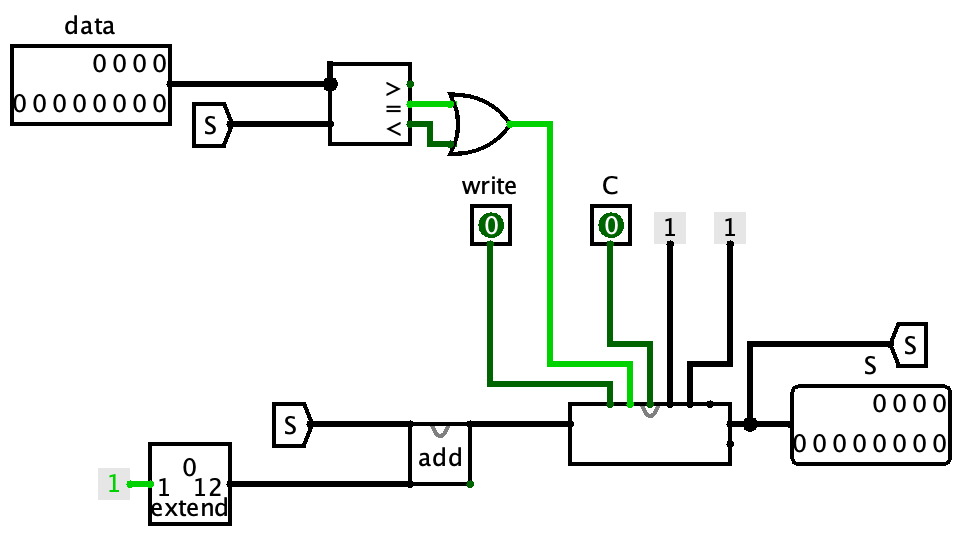

Titel: CA Project 4: Memory
Dit verslag werd opgesteld door:
De oplossing bestaat uit de volgende bestanden:
12-Bit Register: De 12-bit register hebben we gemaakt door het gebruik van D flip-flops. Ze zullen enkel waarden van D opnemen als er een clock cyclus gebeurt en write aan staat. Op deze manier kunnen we een 12-bit input opslaan om die later verder te gebruiken. De reset knop reset alle dflip flops, zodat de opgeslagen waarde wordt verwijderd. Register file: De register file is gemaakt uit 8 12-bit registers, die apart worden gebruikt. Rd zorgt ervoor dat er enkel write doorkomt bij de 12-bit register waarin we een waarde willen opslaan. Rs en rt kunnen elk apart een van de 12-bit registers laten zien, door het gebruik van een mux. Counter:  De counter werkt door telkens de vorige waarde op te tellen met 1. De counter zal resetten als de waarde van de counter even groot is als de data-input. Dit doen we aan de hand van een comparator. Elke clock cyclus zal deze verhogen met 1. Finite State Machine: De finite state machine maakt gebruik van de counter en comparators. Als de counter gelijk is aan een bepaalde waarde zullen de outputs van de comparators veranderen waardoor onze lichten ook veranderen. Stack: We maken gebruik van een pointer, dat eigenlijk een vermomde counter is, maar deze kan ook dalen in waarde. De clock ticks zullen enkel de pointer bereiken bij bepaalde gevallen. Bij 0 skipte onze counter te snel over de Ram waardes, waardoor we de data te laat konden opslaan in de ram. Hierdoor zal hij ook niet plots voorbij 0 gaan, naar de negatieve kant bij pop.